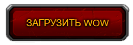

<
Добро пожаловать в World of Warcraft!
Добро пожаловать на Азерот! В мир магии и нескончаемых приключений. Исследуйте постоянно развивающуюся фантастическую вселенную!
Что такое World of Warcraft?
World of Warcraft (WoW) - это массовая многопользовательская ролевая онлайн-игра (MMORPG), разработанная компанией Blizzard Entertainment. Игра была выпущена в 2004 году и с тех пор стала одной из самых популярных и известных онлайн-игр в мире.
Действие игры происходит в фэнтезийном мире Азерот, где игроки могут создать своего персонажа и путешествовать по разным локациям, сражаться с монстрами, выполнять квесты, развивать своего героя и взаимодействовать с другими игроками. В игре доступно несколько рас и классов персонажей, каждый из которых имеет свои уникальные способности и роль в группе.
Игроки могут путешествовать по разным континентам и зонам Азерота, где можно найти разнообразные ландшафты, от скалистых гор до тропических джунглей. В игре также есть различные подземелья и рейды, где игроки могут сражаться с мощными боссами и получать ценные награды.
World of Warcraft также имеет богатую историю и сюжет, который раскрывается через различные квесты и внутриигровые события. Игра регулярно обновляется новым контентом, включая новые зоны, квесты, подземелья и рейды.
Игра требует ежемесячной подписки, но также доступны и другие варианты оплаты, включая бесплатную пробную версию. World of Warcraft имеет большую и активную игровую общину, а также множество фанатских сайтов и ресурсов.